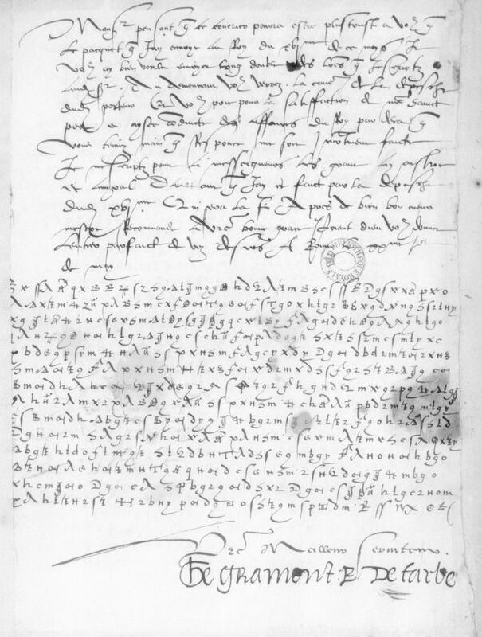
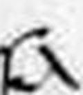
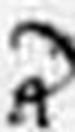
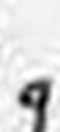

Private mock-up for review, 9 October 2026. Not published, not linked.
Rome · 20 May 1530
A bishop's secret article, in the weeks Rome held Henry VIII's divorce
Writing from Rome, the French envoy Gabriel de Gramont tells the King's secretary he has handed the bearer an article “set apart”, addressed to the secretary though meant for the King, and calls it “le total fondement”: the whole foundation.

Gramont to Villandry, Rome, 20 May [1530]: seven lines in clear, then fourteen in cipher. BnF, Français 2980 f.29r.
Each line: the signs as written; then, when revealed, the French as read (the audited layer, every sign graded) and an English rendering (ours).
H read from a key sourceC from known plaintext or a period key tableS cryptanalytic, with a controlM uncertainI inferredU sign not covered by the keyclear written in clear on the page
Jean Breton de VillandryFrancis I's secretary of finances
receives the f.29r letter
Francis IKing of France
the f.30 letter is to him
Anne de MontmorencyGrand maître, Francis's chief minister
Gramont's March letter is to him
Clement VIIPope, judge of the case
holds the divorce suit at Rome
Henry VIIIKing of England
wants his marriage annulled
Anne Boleynthe woman Henry means to marry
waits on the verdict
“Rochefort”English envoy, as the letter names him
pressed the Pope in March
Portraits pending: public-domain paintings from Wikimedia Commons were to go here; the Commons API refused this build (rate limit), so every face is a labelled placeholder, never a non-free image.
The moment
Clement VII calls Henry VIII's divorce case to Rome.
At Bologna the Pope crowns Charles V emperor; the English and French envoys follow the court.
Gramont, at Bologna, tells Montmorency the Pope has suspended the matter for a month and a half (a letter already printed in 1688; we used it to check the key).
From Rome, Gramont writes in cipher to Villandry (f.29r) and to the King (f.30).
Gramont is created cardinal.
Positions by latitude and longitude; no coastlines drawn.
The secret
Interpretation, not part of the audited reading
An article travels separately with the bearer: addressed to Villandry, meant for the King, and to be asked for in person. Gramont calls it the whole foundation of his business. What the article said is not in this letter.
“le total / fondement”, lines 4–5 of the cipher
Try it
Three signs from the key. Guess, then tap.

tap to read it
A
grade H · Tomokiyo; Lasry

tap to read it
Y
grade H · Tomokiyo; Lasry

tap to read it
E (or B)
grade M · a variant shape; uncertain
How we know
N4No prior decipherment located after the principal editions, catalogues and project pages were searched; internal or unpublished work not excluded.
D2 · about 93.8%Partially deciphered: at least one clause reads, and a verifier wrote one true, specific sentence about it.
Two audits24 Sept 2026 (first audit); 24 Sept 2026 (second, adversarial), each by a session other than the reader.
Grades of the 568 cipher signs read: H 532 · S 1 · M 30 · U 5
HM
Whose key. Published key: the Gramont 1530 key of Satoshi Tomokiyo (Cryptiana) and George Lasry (2023). Tomokiyo identified these letters as readable with it; David Bourdeau catalogued them (no. 328).
The audit's sentence. No prior decipherment located of Gramont's cipher letter to Villandry (BnF fr.2980 f.29r); read in part with the published Gramont 1530 key.
Page and line crops: Bibliothèque nationale de France, Français 2980, f.29r (Gallica, ark:/12148/btv1b9059991d, view 31). BnF images are not public domain: reuse by BnF permission. Shown here in a private mock-up only; permission to be sought before any publication. Portrait placeholders and map drawn for this mock-up. English renderings and gists are ours.